Liquid Crystal Simulation
Modeling Liquid Crystals
First let us introduce Lennard-Jones potential, which is a non-bounded site to site potential:
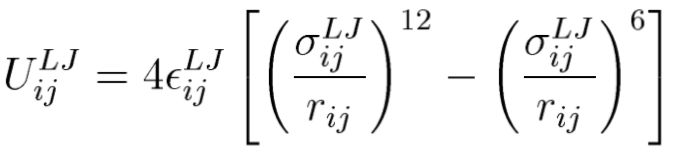
Where 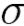 is separation of the particles when 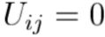 , also known as the collision diameter.
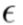 is the depth of the potential well at the minimum in 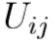 .
Gay - Berne potential is a generalization of Lennard - Jones potential for anisotropic particles.
The Gay - Berne potential is a phenomenological model that includes both attractive and repulsive forces. The molecules in the GB system have translational and orientational degrees of freedom.
The GB potential is given by
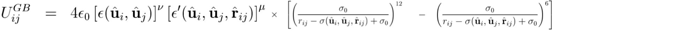
Where is the intermolecular separation at which the attractive and repulsive terms cancel and is given as
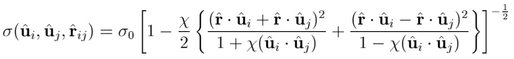
The shape anisotropy parameter 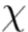 is
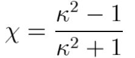
Where 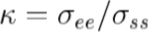
and 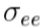 is the separation when the molecules are end to end and
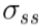 that when they are side by side.
The depth of the well is expressed as
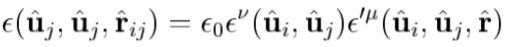
Where
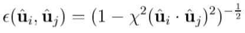
and
.jpg)
Where the parameter  is related to the anisotropy in the well depth via
is related to the anisotropy in the well depth via
.jpg)
Where .jpg) is the ratio of well-depth for end to end and side by side.
is the ratio of well-depth for end to end and side by side.
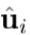 and 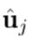 are the orientationvectors of the two molecules,
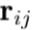 is the vector joining the two centres and 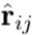 is the unit vector.
 and 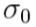 are scaling parameters.
and 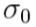 are scaling parameters.
Monte Carlo and Metropolis simulation
Monte Carlo methods are a broad class of computational algorithms that rely on repeated random sampling to obtain numerical results;
i.e., by running simulations many times over in order to calculate those same probabilities heuristically just like actually playing and recording your
results in a real casino situation: hence the name. They are often used in physical and mathematical problems and are most suited to be applied when it
is impossible to obtain a closed-form expression or infeasible to apply a deterministic algorithm.
Metropolis step
- Select a particle at random.
- Attempt a displacement of the selected particle.
- Compute the change in potential.
- Accept the move with probability 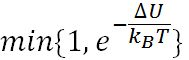
We preformed Monte Carlo method with Gay-Berne potential, to simulate fast heating and then cooling liquid crystal and investigate the phases it is going through.